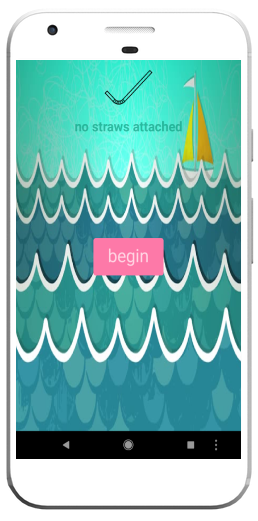
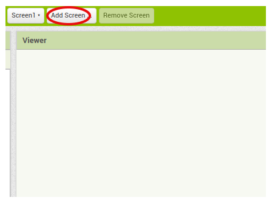
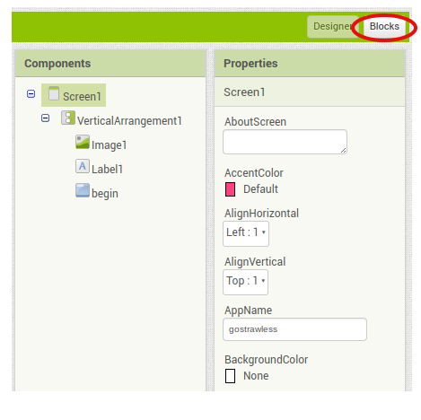
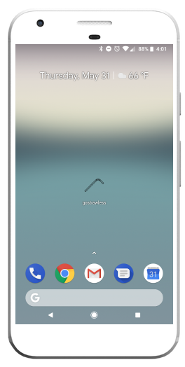

Build an Android App
In this project, you're going to build an Android App to help solve a problem in the world around you. Think about an issue that is important to you. How could an app make it better?
1. The solution you'll be using to build your app is called App Inventor. You can get there by clicking this link or by entering appinventor.mit.edu into your address bar. Once the page loads, click the orange button in the top right corner that says "Create Apps!"

2. After you click the "Create Apps" button, you'll be brought to a Google sign-in form. If you have a Google account, go ahead and log in with it. If you don't, ask a teacher for assistance with setting one up.

3. Once you're logged in, click the "Start new project" button and give your project a name.

4. Now you're ready to create your first screen! Set the title of the screen to the name of your project. (You'll find the Properties pane on the right side of the screen helpful here.) You'll notice that the gray bar at the top of your Viewer pane now has the name of your project!

5. What do you want your first screen to say? In the left column, you'll see your Palette pane. Look through the different categories and options and find a way to display text. Make sure it says something different than the default text. Can you find a way to center it on the screen?

6. Now let's add a background image. Search for an image on Google that helps convey your message and add it to your screen. Feel free to change the color or size of your text. You can add in other images, too!

7. Once you're satisfied with your first screen, go ahead and add another! Click the button that says "Add Screen" and give your new screen a name. You now have a new blank slate. Make your new screen say and look however you want, then move on to step 8.
8. Now that there are two screens, we need a way for the user to get from one screen to the other. Drag a button block from the Palette pane into the Viewer pane. Rename the button to something that describes what it will do when pressed. In the example, we've created a button called "Begin" that will move from the first screen to the second. Play around with the look of the button until you're satisfied.

9. Let's take a minute to test out the app on a phone to see if everything is working properly! Grab an Android phone and make sure the app "MIT AI2 Companion" is installed on it. Then, on App Inventor, click "Connect" on the top navigation menu and select "AI Companion." Using the MIT AI2 Companion app installed on your phone, either scan the QR code or type in the code you see.

10. You should now see the app on your phone. Does everything look the way you want it to? Go ahead and test the button out. Does it work? Don't worry if your answer to the second question is no! To add functionality to your button, you'll need to move out of Design mode into Blocks mode.
11. Look through the different options and categories in Blocks mode so that you have a sense of what is possible. Find the name of your button on the left column. Then find a way to attach a click event to it.

12. Find a way to change from the first screen to the second screen when you click the button. Test it out on your phone to make sure it works!

13. Keep going! Add more screens, explore different blocks, and have fun. Once you're finished, move on to step 14 so we can export the app to your phone!
14. Before you export, create an icon for your app that will appear on your phone. You might find Figma and Noun Project helpful tools for doing this! You can find the option to add your icon to App Inventor in the Properties pane on your first screen. Once you've added the icon, click the Build option on the top navigation menu of App Inventor and select "App (save .apk to computer)".

15. Find the .apk file on your computer and move the file to Google Drive. Then open the file using the Google Drive app on your phone and download and install the app. Make sure your phone settings allow you to download third-party apps. You will now see the app on your phone!
